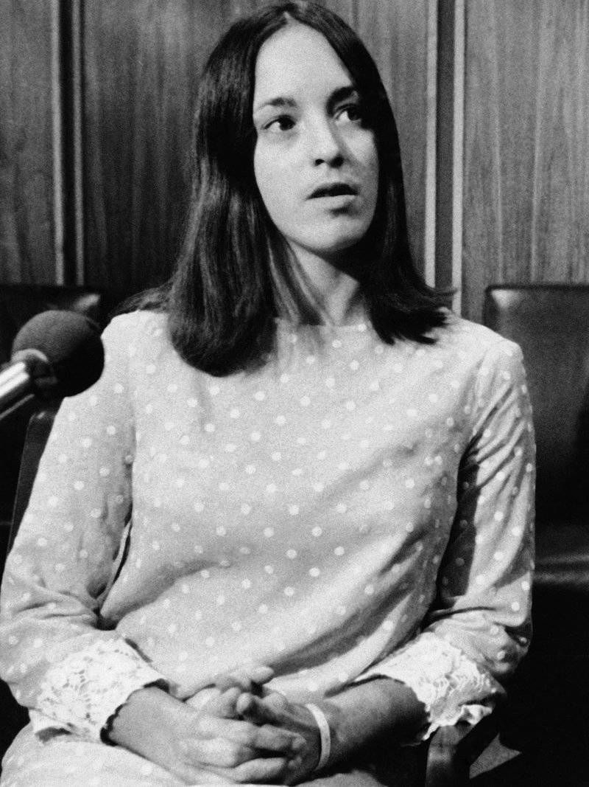
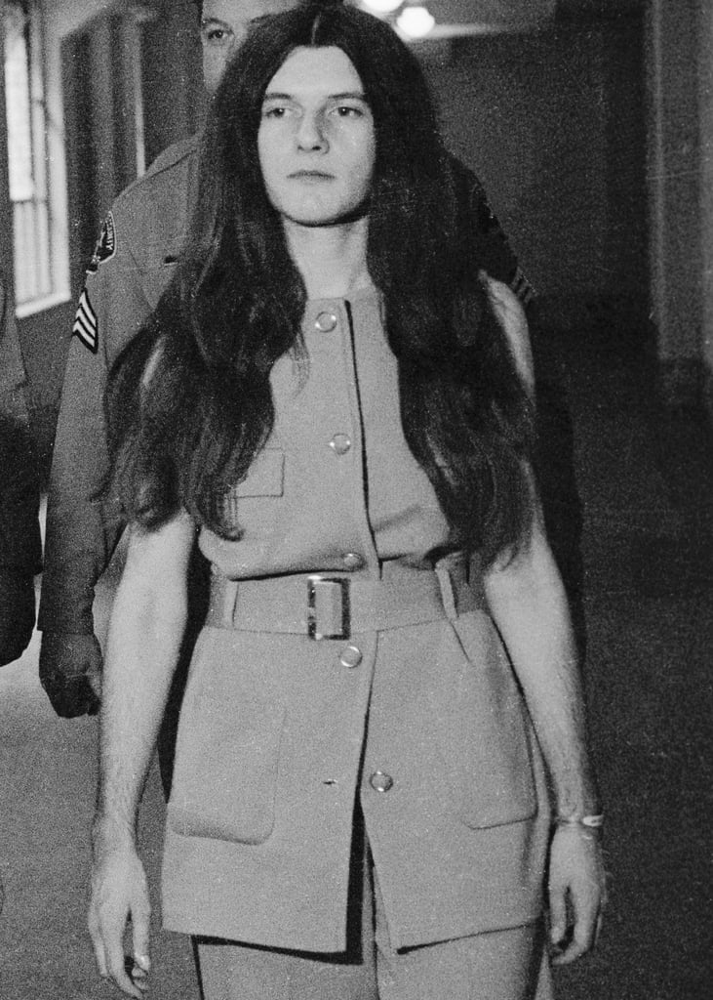
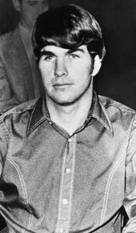
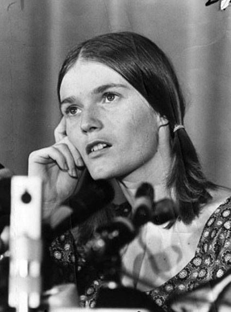

Sharon Tate, victim of Tate murders. Stabbed repeatedly by Susan Atkins, thus killing her and her unborn child. Up and coming Hollywood actress, known for sexpot roles in Valley of the Dolls and The Fearless Vampire Killers. Married to director Roman Polanski. Played by Grace Van Dien in Charlie Says, Hilary Duff, in The Haunting of Sharon Tate, and Margot Robbie in Once Upon a Time... Seen in the first and last films as kind and gentle. Duff portrays Tate is easily irritated, especially by her friends, as well as paranoid due to her fictional clairvoyance.
Sharon Tate, victim of Tate murders. Stabbed repeatedly by Susan Atkins, thus killing her and her unborn child. Up and coming Hollywood actress, known for sexpot roles in Valley of the Dolls and The Fearless Vampire Killers. Married to director Roman Polanski. Played by Grace Van Dien in Charlie Says, Hilary Duff, in The Haunting of Sharon Tate, and Margot Robbie in Once Upon a Time... Seen in the first and last films as kind and gentle. Duff portrays Tate is easily irritated, especially by her friends, as well as paranoid due to her fictional clairvoyance.Susan Atkins, primary Manson member. Involved in both the Tate and LaBianca murders. Early member in 1968, had a child with Manson. Bragged in prison about the murders, leading her bunkmate to testify against her for the prosecution. Recieved life in prison and turned away from Manson's teachings while embracing Christianity. Atkins died in prison in 2009. Played by Marianne Redon in Charlie Says, Bella Popa in The Haunting of Sharon Tate, and Mikey Madison in Once Upon a Time... Overlwhelmingly seen as monstrous and recieves little screen time or lines in the latter two films, but is shown as more stern but complicit in Charlie Says.
 Leslie Van Houten, later Manson member once established in Los Angeles. Arrived at the LaBianca murders and participated. Has shown major remorse and was up for re-trial in the early 1970s due to complications with the death of her lawyer. Van Houten is still alive and has been denied parole at recently as the fall of 2019. She will serve the rest of her life in prison. Played by Hannah Murray in Charlie Says and Victoria Pedretti in Once Upon a Time... Only appears in the Spahn Ranch scene in the latter film, but is a main character and focal point in Charlie Says. Seen as naive, easily lead, though wrestles with her cognitive dissonance throughout the film.
Leslie Van Houten, later Manson member once established in Los Angeles. Arrived at the LaBianca murders and participated. Has shown major remorse and was up for re-trial in the early 1970s due to complications with the death of her lawyer. Van Houten is still alive and has been denied parole at recently as the fall of 2019. She will serve the rest of her life in prison. Played by Hannah Murray in Charlie Says and Victoria Pedretti in Once Upon a Time... Only appears in the Spahn Ranch scene in the latter film, but is a main character and focal point in Charlie Says. Seen as naive, easily lead, though wrestles with her cognitive dissonance throughout the film. Patricia Krenwinkel, very early Manson member. Involved in both the Tate and LaBianca murders. Besides Mary Brunner, Krenwinkel is considered a right-hand man for Manson and is even more of an interest in the public eye due to her involvement in the murders. Sentenced to life in prison and is still alive and is eligible for parole in 2022. Krenwinkel has acknowledged her de-programming and shares sentiment with Van Houten about the severity of their crimes. Played by Sosie Bacon in Charlie Says, Fivel Stuart in The Haunting of Sharon Tate (though is credited as "Yellow", not a nickname associated with Krenwinkel), and Madisen Beaty in Once Upon a Time... Krenwinkel shares the same representation and fate as Atkins does in the first and last films, but is shown as loyal to Manson as well as kindly to the other members in Charlie Says as well as hesitant but obidient when it came to committing the crimes.
Tex Watson, major male member of the Manson family. Known for being part of the Tate-LaBianca murders as well as the murder of black drug dealer Bernard Crowe to incite the beginning of Helter Skelter. After the murders, unlike that of his cohort, Watson escaped to his native Texas. Watson recieved a sentence later than the others convicted but is currently serving a life sentence. Played by Chace Crawford in Charlie Says, Tyler Johnson in The Haunting of Sharon Tate, and Austin Butler in Once Upon a Time... Watson is frequently and unequivocally seen as villanous though does add some slight nuance in Charlie Says, even though he more than other members agree that the deaths were necessary.
 Jay Sebring, ex-fiance and close friend of Tate. Was a hairstylist "to the stars" and was known for his connections and promisciuity in Hollywood. Victim of the Tate murders. Played by Lindsay Farris in Charlie Says, Jonathan Bennett in The Haunting of Sharon Tate, and Emile Hirsch in Once Upon a Time... Appears for one scene in the first film and as a confidant and one sided romantic partner for Tate in the latter two films.
Jay Sebring, ex-fiance and close friend of Tate. Was a hairstylist "to the stars" and was known for his connections and promisciuity in Hollywood. Victim of the Tate murders. Played by Lindsay Farris in Charlie Says, Jonathan Bennett in The Haunting of Sharon Tate, and Emile Hirsch in Once Upon a Time... Appears for one scene in the first film and as a confidant and one sided romantic partner for Tate in the latter two films. Abigail Folger and Wojciech Frykowski, a couple and friends of Sharon Tate who were taking up residence in the 10050 Cielo Drive residence. Victims of the Tate murders. Folger was the heiress to the Folger coffee company and Frykowski a personal friend of Roman Polanski. Folger is played by Lydia Hearst in The Haunting of Sharon Tate and Samantha Robinson in Once Upon a Time... while having an uncredited appearance in Charlie Says post-death. Frykowski is played by an uncredited Mitch Cleaver in Charlie Says, Pawel Szadja in The Haunting of Sharon Tate, and Costa Ronin in Once Upon a Time... Their roles are equally insignificant in the first and last films as they either appear as dead bodies or dinner and house mates of Tate. They are major characters in Haunting as comforters and also potential encroachers and conspirators against Tate.
Abigail Folger and Wojciech Frykowski, a couple and friends of Sharon Tate who were taking up residence in the 10050 Cielo Drive residence. Victims of the Tate murders. Folger was the heiress to the Folger coffee company and Frykowski a personal friend of Roman Polanski. Folger is played by Lydia Hearst in The Haunting of Sharon Tate and Samantha Robinson in Once Upon a Time... while having an uncredited appearance in Charlie Says post-death. Frykowski is played by an uncredited Mitch Cleaver in Charlie Says, Pawel Szadja in The Haunting of Sharon Tate, and Costa Ronin in Once Upon a Time... Their roles are equally insignificant in the first and last films as they either appear as dead bodies or dinner and house mates of Tate. They are major characters in Haunting as comforters and also potential encroachers and conspirators against Tate. Steven Parent, 18-year-old friend of William Garretson who occupied the guest house at 10050 Cielo Drive. Victim of Tate murders and was first to interact with the family at an attempt to prevent any robbery or wrongdoing. Parent is normally known as a teenager who was working to save toward his upcoming college years. Played by Ryan Cargill in The Haunting of Sharon Tate and becomes a sane escape from the goings-on in the Tate residence for Tate and occupies the guest house, which is not necessarily historically accurate.
Steven Parent, 18-year-old friend of William Garretson who occupied the guest house at 10050 Cielo Drive. Victim of Tate murders and was first to interact with the family at an attempt to prevent any robbery or wrongdoing. Parent is normally known as a teenager who was working to save toward his upcoming college years. Played by Ryan Cargill in The Haunting of Sharon Tate and becomes a sane escape from the goings-on in the Tate residence for Tate and occupies the guest house, which is not necessarily historically accurate.Linda Kasabian, later Manson member. Kasabian was present for the Tate murders, but backed away once the carnage began and did not participate. Became a key witness for the prosecution and had charges dropped against her. Kasabian is still alive and remains a controversial figure in the Manson lore. She has renounced the family. Played by India Ennega in Charlie Says, and Maya Hawke in Once Upon a Time... Very brief character in the first film and the most important part of her character is the late induction after that of Van Houten's. Seen in the latter film as running away from the group before they get out of the car and up the street.
 Charles Manson, the head of the Manson family and constructor of the murders. Manson believed he was a Christ figure. He spent most of his life in and out of prison until the late 1960s when he put his "family" together. Sentenced to life in prison and died in 2017. Played by Matt Smith in Charlie Says, Ben Mellish in The Haunting of Sharon Tate, and Damon Herriman in Once Upon a Time... Easily the most villified in all film adaptations, overtly creepy in the last two films in which he appears only once. Given more screentime in Charlie Says and shows the highs and lows of being a member of the family with Manson.
Charles Manson, the head of the Manson family and constructor of the murders. Manson believed he was a Christ figure. He spent most of his life in and out of prison until the late 1960s when he put his "family" together. Sentenced to life in prison and died in 2017. Played by Matt Smith in Charlie Says, Ben Mellish in The Haunting of Sharon Tate, and Damon Herriman in Once Upon a Time... Easily the most villified in all film adaptations, overtly creepy in the last two films in which he appears only once. Given more screentime in Charlie Says and shows the highs and lows of being a member of the family with Manson.